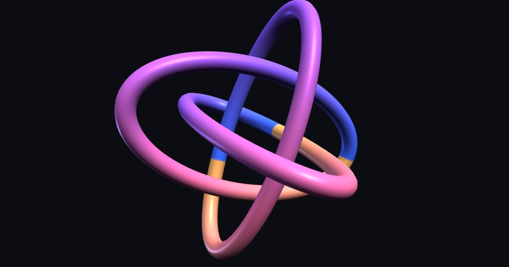

Math Explorer · Knots & Links
Knots & Links: the trefoil, Borromean rings and more in 3D
Closed loops that can't be untied, and links of loops that can't be pulled apart.

Start exploring Knots & Links →
To a mathematician a knot is a loop with its ends joined, so it can never be untied without cutting. The simplest real knot is the trefoil; there is no way to wiggle it into a plain circle. Mathematicians tell knots apart with invariants, numbers and polynomials that stay the same however the loop is moved, and every knot here was checked that way.
Links are several loops tangled together. The Borromean rings are the famous example: no two rings are linked, yet all three hold together, and cutting any one frees the other two. You can ride along any knot like a roller coaster, and on a link the ride hops onto the next ring where they pass closest.
Things to try
- Press G to ride along the trefoil like a roller coaster
- Look at the Borromean rings and check that no two rings are linked
- Compare the granny knot with the square knot
- Change a torus knot's two numbers and watch it wind
- Print a knot as a tube
Start exploring Knots & Links →